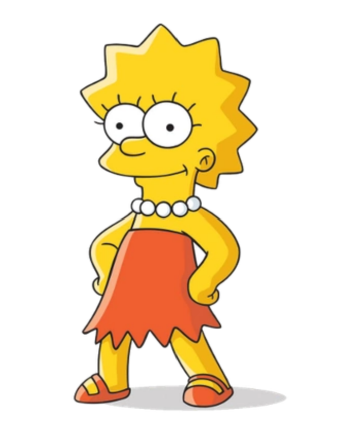

The Simpson family consists of fictional characters featured in the animated television series The Simpsons. The Simpsons are a nuclear family consisting of married couple Homer and Marge and their three children Bart, Lisa, and Maggie. They live at 742 Evergreen Terrace in the fictional town of Springfield, United States, and they were created by cartoonist Matt Groening, who conceived the characters after his own family members, substituting "Bart" for his own name. The family debuted on Fox on April 19, 1987, in The Tracey Ullman Show short "Good Night" and were later spun off into their own series, which debuted on Fox in the U.S. on December 17, 1989.
Homer Jay Simpson (born May 12, 1956) is the main protagonist of The Simpsons series (or show). He is the spouse of Marge Simpson and father of Bart, Lisa and Maggie Simpson. Homer is overweight (said to be ~240 pounds), lazy, and often ignorant to the world around him.
Lisa Marie Simpson (voiced by Yeardley Smith) is the eldest daughter and middle child of the family. She is an extremely intelligent 8-year-old girl, one of the most intelligent characters on the show. Lisa's political convictions are generally socially liberal.
